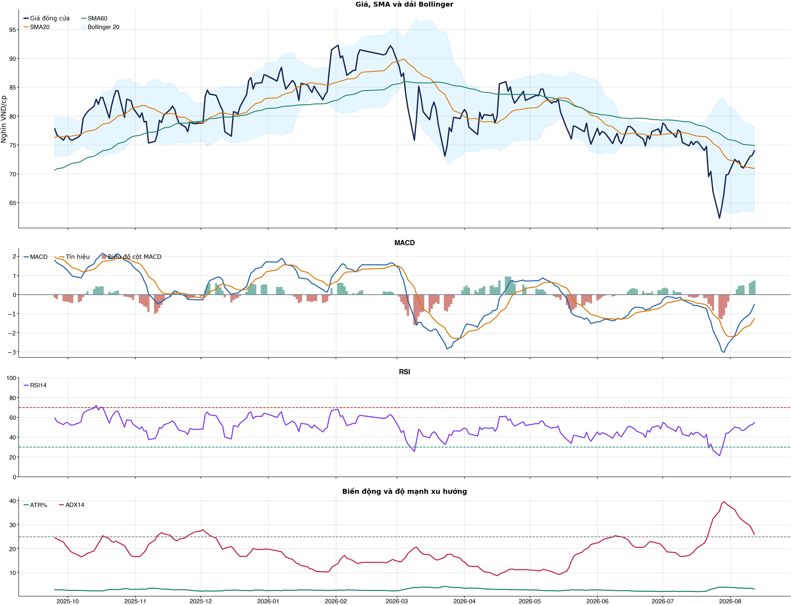
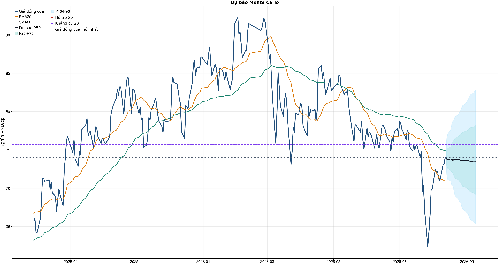
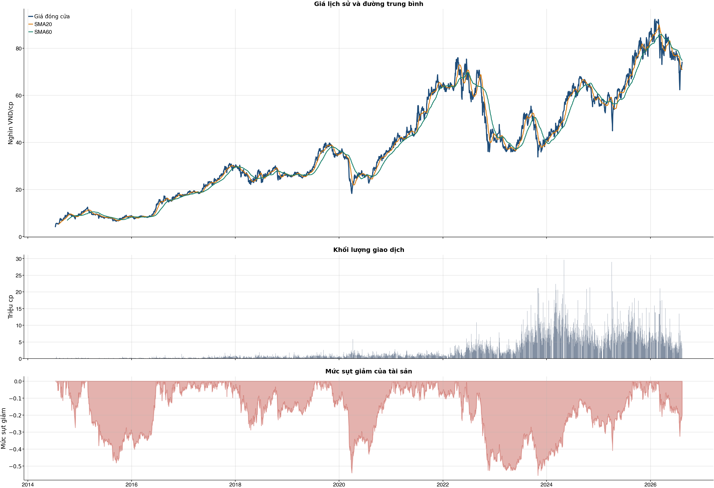

Kết quả chính
Tổng quan cơ bản
Biểu đồ kỹ thuật

Tín hiệu kỹ thuật
| Xu hướng | Cẩn thận | Giá nằm dưới SMA60. |
| MACD | Tích cực | MACD trên signal, histogram dương. |
| RSI14 | Trung tính | RSI 54.7. |
| Bollinger | Ổn định | Giá nằm trong dải Bollinger. |
| ADX | Xu hướng giảm | ADX 26.0, -DI vượt +DI. |
| Thanh khoản | Thấp | 0.57 lần trung bình. |
| Stochastic | Cực trị | %K 98.4, %D 92.7. |
So sánh mô hình
| XGBoost | 0.511 | AUC 0.506 |
| Logistic | 0.529 | AUC 0.525 |
| Đa số | 0.500 | Mốc so sánh |
Kiểm thử chiến lược ngoài mẫu sau chi phí
| Lợi nhuận ròng | -6.6% | 633 quan sát ngoài mẫu |
| Sharpe | -0.21 | Sau chi phí |
| Mức sụt giảm tối đa | -14.2% | 84 vòng giao dịch |
| Chi phí giả định | 50.0 bps | Một vòng mua và bán |
Mức độ quan trọng của đặc trưng
| beta_60d | 8.40 | Mức đóng góp |
| day_of_week | 7.80 | Mức đóng góp |
| excess_return_5d | 7.60 | Mức đóng góp |
| month_of_year | 7.38 | Mức đóng góp |
| return_2d | 7.37 | Mức đóng góp |
| stoch_k_14 | 7.25 | Mức đóng góp |
| return_5d | 7.22 | Mức đóng góp |
| return_10d | 7.22 | Mức đóng góp |
Điều kiện phát hành tín hiệu
| AUC của mô hình | KHÔNG ĐẠT | Điều kiện phát hành tín hiệu |
| Độ chính xác cân bằng của mô hình | KHÔNG ĐẠT | Điều kiện phát hành tín hiệu |
| XGBoost vượt mô hình Logistic đối chứng | KHÔNG ĐẠT | Điều kiện phát hành tín hiệu |
| Xác suất tăng đạt ngưỡng | KHÔNG ĐẠT | Điều kiện phát hành tín hiệu |
| Bối cảnh kỹ thuật đạt ngưỡng | KHÔNG ĐẠT | Điều kiện phát hành tín hiệu |
| Tỷ lệ lợi nhuận/rủi ro đạt ngưỡng | ĐẠT | Điều kiện phát hành tín hiệu |
| Dữ liệu còn mới | ĐẠT | Điều kiện phát hành tín hiệu |
| Có khối lượng vị thế hợp lệ | ĐẠT | Điều kiện phát hành tín hiệu |
| Có kết quả kiểm thử chiến lược ngoài mẫu | ĐẠT | Điều kiện phát hành tín hiệu |
| Mẫu kiểm thử chiến lược đủ lớn | ĐẠT | Điều kiện phát hành tín hiệu |
| Kiểm thử chiến lược có lợi thế ròng | KHÔNG ĐẠT | Điều kiện phát hành tín hiệu |
Quản trị rủi ro
| Rủi ro/lệnh | 1.0% | 1,000,000 VND |
| Mức dừng lỗ | 70.45 | Rủi ro mỗi cổ phiếu 3.91 |
| Mục tiêu 1 | 82.80 | Lợi nhuận/rủi ro 2.15 |
| Mục tiêu 2 | 82.80 | Dự báo/kháng cự |
Phân tích cơ bản
| P/E | 10.98 | 2026-Q2 |
| P/B | 3.02 | 2026-Q2 |
| P/S | 0.61 | 2026-Q2 |
| ROE | 29.2% | 2026-Q2 |
| ROA | 11.2% | 2026-Q2 |
| Gross margin | 20.7% | 2026-Q2 |
| Net margin | 5.6% | 2026-Q2 |
| Debt/Equity | 1.89 | 2026-Q2 |
| Current ratio | 1.44 | 2026-Q2 |
| NPL | 0.0% | 2026-Q2 |
| Dividend yield | 0.0% | 2026-Q2 |
| Market cap | 108,026.0 tỷ | 2026-Q2 |
| Revenue Growth | 29.6% | 2026-Q2 YoY |
| Profit Growth | 100.4% | 2026-Q2 YoY |
| Dòng tiền từ HĐKD | 16,986.7 tỷ | 2026-Q2 |
| CAPEX | -296.5 tỷ | 2026-Q2 |
| Lợi nhuận sau thuế | 3,354.9 tỷ | 2026-Q2 |
| Lợi nhuận hoạt động | 4,034.4 tỷ | 2026-Q2 |
| Chi phí lãi vay | -436.3 tỷ | 2026-Q2 |
| Tiền và tương đương tiền | 17,993.7 tỷ | 2026-Q2 |
| Vay ngắn hạn | 29,089.6 tỷ | 2026-Q2 |
| Vay dài hạn | 0.0 tỷ | 2026-Q2 |
| Tổng tài sản | 104,915.0 tỷ | 2026-Q2 |
| Tổng nợ phải trả | 68,563.6 tỷ | 2026-Q2 |
| Vốn chủ sở hữu | 36,351.3 tỷ | 2026-Q2 |
| Khoản phải thu | 2,434.3 tỷ | 2026-Q2 |
| Hàng tồn kho | 30,874.9 tỷ | 2026-Q2 |
| Dòng tiền tự do (CFO - CAPEX) | 16,690.1 tỷ | 2026-Q2 |
| CFO / Lợi nhuận sau thuế | 5.06 | 2026-Q2 |
| Nợ vay ròng | 11,095.9 tỷ | 2026-Q2 |
| Nợ vay / Vốn chủ sở hữu | 0.80 | 2026-Q2 |
| Phải thu / Tổng tài sản | 2.3% | 2026-Q2 |
| Khả năng trả lãi (EBIT / lãi vay) | 9.25 | 2026-Q2 |
Tin tức doanh nghiệp
| Trạng thái | Có dữ liệu | research_only |
| Nguồn / số bài | VCI | 50 |
| Bài đủ timestamp | 50 | Chỉ các bài này mới được phép dùng point-in-time |
| Sentiment 5 ngày | 0.00 | 1.0 bài trước cutoff |
| Phương pháp | keyword_heuristic_v1 | Research only; chưa dùng làm tín hiệu mua/bán |
Dự báo ngắn hạn
| 2026-08-13 | 73.88 | P10 72.18 / P90 76.12 |
| 2026-08-14 | 73.68 | P10 71.16 / P90 77.02 |
| 2026-08-17 | 73.81 | P10 70.95 / P90 77.63 |
| 2026-08-18 | 73.78 | P10 70.38 / P90 78.31 |
| 2026-08-19 | 73.64 | P10 70.38 / P90 78.75 |
| 2026-08-20 | 73.72 | P10 69.59 / P90 78.91 |
| 2026-08-21 | 73.73 | P10 69.00 / P90 79.34 |
| 2026-08-24 | 73.73 | P10 68.62 / P90 79.60 |
Biểu đồ dự báo

Lịch sử giá và mức sụt giảm

Báo cáo dùng để học tập và lập kịch bản, không phải khuyến nghị mua/bán.
Phân tích AI có kiểm chứng
Trạng thái quyết định: NO_EDGE
Tóm tắt: ML decision hiện giữ nguyên NO_EDGE. News Reader đã trích đoạn có nguồn của 4 bài để phân loại chủ đề (ket_qua_kinh_doanh: 4, co_tuc_va_hanh_dong_doanh_nghiep: 2, vi_mo: 3, nganh: 4), nhưng các trích đoạn này không tạo bằng chứng mới cho quyết định đầu tư.
Kỹ thuật: Artifact kỹ thuật: bias Suy yếu / cẩn thận; điểm -2. Chi tiết artifact: Xu hướng: Cẩn thận (Giá nằm dưới SMA60.); MACD: Tích cực (MACD trên signal, histogram dương.); RSI14: Trung tính (RSI 54.7.); Bollinger: Ổn định (Giá nằm trong dải Bollinger.); ADX: Xu hướng giảm (ADX 26.0, -DI vượt +DI.); Thanh khoản: Thấp (0.57 lần trung bình.); Stochastic: Cực trị (%K 98.4, %D 92.7.)
Cơ bản: Artifact cơ bản: Thế giới di động; kỳ 2026-Q2; P/E 10.98; P/B 3.02; ROE 29.2%; ROA 11.2%; Debt/Equity 1.89; Revenue Growth 29.6%; Profit Growth 100.4%.
Tin tức: Đã đọc trích đoạn giới hạn của 4 bài; phân nhóm rule-based: ket_qua_kinh_doanh: 4, co_tuc_va_hanh_dong_doanh_nghiep: 2, vi_mo: 3, nganh: 4. Tác động cần kiểm chứng: Đối chiếu doanh thu/lợi nhuận trong bài với BCTC và kỳ vọng thị trường. Kiểm tra ngày GDKHQ, tỷ lệ, nguồn chi trả và nguy cơ pha loãng trước khi đánh giá tác động. Đối chiếu thời điểm công bố và kênh tác động lãi suất/tỷ giá với mô hình kinh doanh. So sánh tín hiệu ngành với thị phần, nhu cầu và đối thủ trước khi suy luận cho riêng doanh nghiệp. Đây không phải sentiment hay dự báo tác động giá.
Live research: Live snapshot lấy lúc 2026-08-12T15:16:05.132053+00:00; News Reader đọc được 4 bài. ML có 6 lý do guard và vẫn là NO_EDGE. Không dùng tin live để train/backtest.
Rủi ro cần kiểm chứng
- ML guard: AUC 0.506 < 0.540
- ML guard: Balanced accuracy 0.511 < 0.520
- ML guard: XGBoost chưa vượt logistic baseline: AUC XGBoost=0.5056010383386581, AUC logistic=0.5245007987220447
- ML guard: Probability 47.4% < 55.0%
- ML guard: Technical score -2 < 2
- ML guard: Lợi thế OOS ròng không đạt: return=-0.06561506000000039, Sharpe=-0.21066571922901275
- News Reader: Đối chiếu doanh thu/lợi nhuận trong bài với BCTC và kỳ vọng thị trường.
- News Reader: Kiểm tra ngày GDKHQ, tỷ lệ, nguồn chi trả và nguy cơ pha loãng trước khi đánh giá tác động.
- News Reader: Đối chiếu thời điểm công bố và kênh tác động lãi suất/tỷ giá với mô hình kinh doanh.
- News Reader: So sánh tín hiệu ngành với thị phần, nhu cầu và đối thủ trước khi suy luận cho riêng doanh nghiệp.
- Chỉ lưu trích đoạn giới hạn để kiểm chứng nguồn; không lưu hay hiển thị toàn văn bài báo.
- Phân nhóm là keyword rule-based để định tuyến research, không phải sentiment hay dự báo tác động giá.
- Dữ liệu News Reader chỉ phục vụ research/report; không dùng làm feature train/backtest khi chưa có lịch sử available_at point-in-time.
- Tin live/trích đoạn cần mở URL gốc để kiểm chứng bối cảnh, số liệu và thời điểm trước khi sử dụng.
Bằng chứng
- ML decision artifact: NO_EDGE. AUC 0.506 < 0.540
- ML decision artifact: NO_EDGE. Balanced accuracy 0.511 < 0.520
- ML decision artifact: NO_EDGE. XGBoost chưa vượt logistic baseline: AUC XGBoost=0.5056010383386581, AUC logistic=0.5245007987220447
- ML decision artifact: NO_EDGE. Probability 47.4% < 55.0%
- ML decision artifact: NO_EDGE. Technical score -2 < 2
- ML decision artifact: NO_EDGE. Lợi thế OOS ròng không đạt: return=-0.06561506000000039, Sharpe=-0.21066571922901275
- News Reader [VOV.VN]: Một số cổ phiếu cần quan tâm 10/8: Cơ hội tiềm năng với MWG và DMX - VOV.VN | nhóm: ket_qua_kinh_doanh, co_tuc_va_hanh_dong_doanh_nghiep, nganh (2026-08-09T22:00:00+00:00)
- News Reader [nguoiquansat.vn]: Cổ phiếu đáng chú ý ngày 10/8: MSN, MWG, FPT - nguoiquansat.vn | nhóm: ket_qua_kinh_doanh, vi_mo, nganh (2026-08-09T14:51:01+00:00)
- News Reader [VietstockFinance]: MWG: Khuyến nghị MUA với giá mục tiêu 107,300 đồng/cổ phiếu - VietstockFinance | nhóm: ket_qua_kinh_doanh, co_tuc_va_hanh_dong_doanh_nghiep, vi_mo, nganh (2026-08-08T03:01:23+00:00)
- News Reader [vneconomy.vn]: “Ôm” ba cổ phiếu giảm 22% trong tháng 7, “cá mập” Pyn Elite báo lỗ nặng - vneconomy.vn | nhóm: ket_qua_kinh_doanh, vi_mo, nganh (2026-08-10T06:54:22+00:00)
Báo cáo chỉ tổng hợp artifact đã lưu để nghiên cứu; không phải khuyến nghị mua/bán. Quyết định và vị thế vẫn bị khóa theo signal_decision.json.
Tin web đã lấy
| Nguồn | Tiêu đề | Thời điểm | Link |
|---|---|---|---|
| VOV.VN | Một số cổ phiếu cần quan tâm 10/8: Cơ hội tiềm năng với MWG và DMX - VOV.VN | 2026-08-09T22:00:00+00:00 | Mở nguồn |
| nguoiquansat.vn | Cổ phiếu đáng chú ý ngày 10/8: MSN, MWG, FPT - nguoiquansat.vn | 2026-08-09T14:51:01+00:00 | Mở nguồn |
| VietstockFinance | MWG: Khuyến nghị MUA với giá mục tiêu 107,300 đồng/cổ phiếu - VietstockFinance | 2026-08-08T03:01:23+00:00 | Mở nguồn |
| vneconomy.vn | “Ôm” ba cổ phiếu giảm 22% trong tháng 7, “cá mập” Pyn Elite báo lỗ nặng - vneconomy.vn | 2026-08-10T06:54:22+00:00 | Mở nguồn |
| VietstockFinance | MWG: Khuyến nghị MUA với giá mục tiêu 107,300 đồng/cổ phiếu - VietstockFinance | 2026-08-06T08:54:35+00:00 | Mở nguồn |
| Mekong ASEAN | Điện Máy Xanh chính thức đưa hơn 1,26 tỷ cổ phiếu lên sàn HoSE - Mekong ASEAN | 2026-08-06T09:19:08+00:00 | Mở nguồn |
| cafef.vn | Vốn hóa DMX vượt tập đoàn mẹ MWG - cafef.vn | 2026-08-10T09:50:00+00:00 | Mở nguồn |
| cafef.vn | Nắm trong tay Điện Máy Xanh, Bách Hóa Xanh, An Khang, vốn hóa MWG chỉ ngang DMX - cafef.vn | 2026-08-06T17:01:00+00:00 | Mở nguồn |
| MoneyF | Nắm trong tay Điện Máy Xanh, Bách Hóa Xanh, An Khang, vốn hóa MWG chỉ ngang DMX - MoneyF | 2026-08-07T02:09:00+00:00 | Mở nguồn |
News Reader: bài đã đọc và trích đoạn
| Nguồn | Tiêu đề | Nhóm | Thời điểm | Trích đoạn đã đọc | Link |
|---|---|---|---|---|---|
| VOV.VN | Một số cổ phiếu cần quan tâm 10/8: Cơ hội tiềm năng với MWG và DMX - VOV.VN | ket_qua_kinh_doanh, co_tuc_va_hanh_dong_doanh_nghiep, nganh | 2026-08-09T22:00:00+00:00 | Xem trích đoạnVOV.VN - Các công ty chứng khoán vừa đưa ra khuyến nghị một số mã cổ phiếu cần quan tâm cho phiên giao dịch hôm nay 10/8. Trong đó, nhóm cổ phiếu tiềm năng thuộc ngành Bán lẻ như MWG và DMX đang thu hút dòng tiền nhờ triển vọng kinh doanh tích cực. Công ty Chứng khoán An Bình (ABS) khuyến nghị mua đối với cổ phiếu của Công ty CP Đầu tư Thế giới di động (MWG) với giá mục tiêu là 83.900 đồng, tương ứng tiềm năng tăng giá là 16,4% so với giá đóng cửa ngày 5/8 là 72.100 đồng. Trong quý 2 năm 2026, doanh thu đạt 48.751 tỷ đồng (+29,6% so với cùng kỳ) và lợi nhuận sau thuế đạt 3.355 tỷ đồng (+102% so với cùng kỳ). Lũy kế 6 tháng đầu năm, doanh thu thuần đạt 95.213 tỷ đồng, tăng 29,1% so với cùng kỳ, và lợi nhuận ròng của cổ đông công ty mẹ đạt 6.017 tỷ đồng, tăng 88,4% so với cùng kỳ nhờ kết quả tích cực từ chuỗi Điện Máy Xanh và cải thiện của Bách Hóa Xanh. Lượng tiền mặt lớn đạt 18.180 tỷ đồng cùng với 13.316 tỷ đồng thu được từ đợt IPO Điện Máy Xanh giúp củng cố thanh khoản. ABS nâng dự phóng doanh thu thuần và lợi nhuận sau thuế (LNST) cổ đông Công ty mẹ 2026F của MWG lên lần lượt 208.485 tỷ đồng (+33,7% so với cùng kỳ) và 11.987 tỷ đồng (+70,4% so với cùng kỳ). EPS & BVPS 2026F dự kiến đạt 8.123 đồng/cổ phiếu và 25.676 đồng/cổ phiếu, tương ứng P/E và P/B lần lượt đạt 8,9x và 2,8x tại mức giá hiện tại. ABS định giá cổ phiếu MWG theo phương pháp SOTP. Theo đó, giá trị hợp lý của cổ phiếu MWG là 83.900 đồng/cổ phiếu. ABS khuyến nghị mua với cổ phiếu MWG với tiềm năng tăng giá 16,4% từ giá hiện tại. Công ty Chứng khoán VIX khuyến nghị tích cực đối với cổ phiếu của Công ty cổ phần đầu tư Điện Máy Xanh (DMX) với giá mục tiêu là 103.000 đồng, tương ứng với mức lợi nhuận kỳ vọng là 28,8% so với giá đóng cửa 80.000 đồng tại ngày 5/8. Trong quý 2 năm 2026, DMX ghi nhận doanh thu đạt 32.737 tỷ đồng (+33% so với cùng kỳ) và lợi nhuận sau thế bứt phá 80% đạt 2.650 tỷ đồng, nâng biên lợi nhuận ròng lên 8,1%. Cho cả năm 2026, VIX dự phóng doanh thu của DMX đạt hơn 133.000 tỷ đồng (+22% so với cùng kỳ) và lợi nhuận sau thuế đạt hơn 10.244 tỷ đồng (+77% so với cùng kỳ), hoàn thành 65% kế hoạch. Các chỉ số sinh lời cải thiện mạnh với ROE đạt 31% và ROA đạt 11%. Cổ tức tiền mặt dự kiến sau 1 năm niêm yết có thể đạt 8.000 đồng/cổ phiếu. Với kỳ vọng KQKD giai đoạn 2026 - 2031, VIX sử dụng kết hợp DCF để xác định giá trị hợp lý của DMX. Trong đó, DCF được triển khai theo hai mô | Mở nguồn |
| nguoiquansat.vn | Cổ phiếu đáng chú ý ngày 10/8: MSN, MWG, FPT - nguoiquansat.vn | ket_qua_kinh_doanh, vi_mo, nganh | 2026-08-09T14:51:01+00:00 | Xem trích đoạnCông ty chứng khoán phân tích và đưa ra nhận định mua, bán đối với các cổ phiếu MSN, MWG, FPT. Masan (MSN): Khuyến nghị tăng tỷ trọng, giá mục tiêu 75.000 đồng/cp Kết phiên 7/8, cổ phiếu MSN tăng 1,4% lên 67.400 đồng/cp. Thanh khoản đạt 3,2 triệu đơn vị, tương ứng giá trị giao dịch 213 tỷ đồng. Theo Chứng khoán Agribank (Agriseco), cổ phiếu MSN đang ghi nhận nhịp hồi phục kỹ thuật sau khi đánh mất vùng hỗ trợ 66.000 đồng/cp và lùi về dải dưới Bollinger quanh 62.000 - 63.000 đồng/cp. Giá cổ phiếu hiện đã quay trở lại vùng đáy của nền tích lũy trung hạn 66.000 - 68.000 đồng/cp, đồng thời lấy lại MA20 ngày, cho thấy xu hướng ngắn hạn đang cải thiện và mở ra cơ hội tích lũy cho nhà đầu tư trung hạn khi định giá đã lùi về vùng hỗ trợ. Trong ngắn hạn, vùng MA50 quanh 69.500 - 70.000 đồng/cp đang đóng vai trò kháng cự đáng chú ý. Nhà đầu tư có thể mở vị thế mua ngắn hạn quanh vùng giá hiện tại và gia tăng tỷ trọng nếu MSN vượt vùng kháng cự này với thanh khoản cải thiện, qua đó xác nhận khả năng mở rộng nhịp hồi phục. Giá mục tiêu cho các vị thế ngắn hạn là 75.000 đồng/cp; cân nhắc cắt lỗ nếu cổ phiếu không giữ được vùng hỗ trợ và xuyên thủng ngưỡng 63.000 đồng/cp. Về triển vọng kinh doanh, Agriseco kỳ vọng mảng hàng tiêu dùng - bán lẻ của MSN tiếp tục duy trì tăng trưởng hai chữ số trong nửa cuối năm 2026, được hỗ trợ bởi tổng mức bán lẻ hàng hóa cả nước 7 tháng đầu năm tăng 13,1% so với cùng kỳ. WCM cũng đang bám sát kế hoạch mở mới trong năm 2026, với hơn 90% cửa hàng mở mới có EBITDA dương. Bên cạnh đó, MSR được kỳ vọng tiếp tục đóng góp tích cực khi giá APT vonfram quốc tế dù giảm hơn 30% từ đầu năm vẫn cao hơn 40 - 70% so với cùng kỳ, trong khi giá đồng duy trì ở vùng cao nhiều năm. Agriseco kỳ vọng lợi nhuận sau thuế của MSN có thể duy trì tăng trưởng 25 - 40% trong nửa cuối năm 2026. Bên cạnh đó, MSN đang có nghĩa vụ quyền chọn bán tại The CrownX trị giá khoảng 750 triệu USD, đáo hạn vào quý III/2027. Ngoài ra, ban lãnh đạo dự kiến thu xếp nguồn vốn từ dòng tiền tự do của MSN và thu hút đối tác chiến lược vào MSR sau khi doanh nghiệp chuyển sàn. Tuy nhiên, Agriseco lưu ý rủi ro phụ thuộc vào nguồn nguyên liệu nhập khẩu tại MSR. Hiện khoảng 30% nguyên liệu đầu vào của MSR đến từ nguồn nội bộ và 70% từ nhập khẩu. Chênh lệch biên lợi nhuận gộp giữa hai nguồn lên tới 3 - 4 lần có thể trở thành yếu tố ảnh hưởng đến lợi nhuận trong tương lai. Trong ngắn hạn, rủi | Mở nguồn |
| VietstockFinance | MWG: Khuyến nghị MUA với giá mục tiêu 107,300 đồng/cổ phiếu - VietstockFinance | ket_qua_kinh_doanh, co_tuc_va_hanh_dong_doanh_nghiep, vi_mo, nganh | 2026-08-08T03:01:23+00:00 | Xem trích đoạnThứ Tư, 12/08/2026 Vietstock ( VN | EN ) Đấu trường chứng khoán Diễn đàn IR Awards Dịch vụ Vietstock ( VN | EN ) Đấu trường chứng khoán Diễn đàn IR Awards Dịch vụ Đấu trường chứng khoán Diễn đàn IR Awards Dịch vụ Vĩ mô Dữ liệu Cập nhật chỉ số vĩ mô mới nhất 1. Tài khoản quốc gia (GDP) Tổng sản phẩm trong nước (GDP) 2. Chỉ số giá và lạm phát Chỉ số giá và lạm phát cơ bản 3. Thị trường lao động và việc làm Chi tiết Thị trường lao động và việc làm 4. Thị trường bán lẻ Thị trường bán lẻ hàng hóa và dịch vụ 5. Sản xuất công nghiệp Chi tiết sản xuất toàn ngành công nghiệp 6. Bất động sản và xây dựng Chi tiết Bất động sản và Xây dựng 7. Cán cân thanh toán quốc tế Tổng hợp giao dịch kinh tế quốc tế 8. Chính sách tài khóa và tài chính quốc gia Chi tiết quản lý thu, chi ngân sách và nợ công, điều tiết kinh tế 9. Chính sách tiền tệ Chính sách tiền tệ: điều tiết cung tiền, lãi suất, ổn định giá 10. Đầu tư trực tiếp nước ngoài (FDI) Vốn nước ngoài vào sản xuất, kinh doanh nội địa 11. Xuất nhập khẩu theo quốc gia và hàng hóa Chi tiết xuất nhập khẩu theo quốc gia và hàng hóa cụ thể Báo cáo phân tích Báo cáo phân tích vĩ mô mới nhất Thuật ngữ Các thuật ngữ vĩ mô Tin tức Tin tức thị trường vĩ mô mới nhất Ngành Dữ liệu ngành Tổng quan ngành Ngành chi tiết Thông tin chi tiết một ngành Năng lượng Chi tiết ngành Năng lượng Nguyên vật liệu Chi tiết ngành Nguyên vật liệu Công nghiệp Chi tiết ngành Công nghiệp Tiêu dùng không thiết yếu Chi tiết ngành Tiêu dùng không thiết yếu Tiêu dùng thiết yếu Chi tiết ngành Tiêu dùng thiết yếu Chăm sóc sức khỏe Chi tiết ngành Chăm sóc sức khỏe Tài chính Chi tiết ngành Tài chính Công nghệ thông tin Chi tiết ngành Công nghệ thông tin Dịch vụ truyền thông Chi tiết ngành Dịch vụ truyền thông Tiện ích Chi tiết ngành Tiện ích Bất động sản Chi tiết ngành Bất động sản Doanh nghiệp Doanh nghiệp A-Z Danh sách doanh nghiệp đầy đủ Công ty phi tài chính Danh sách doanh nghiệp phi tài chính Ngân hàng Danh sách ngân hàng Công ty chứng khoán Danh sách công ty chứng khoán Công ty bảo hiểm Danh sách công ty bảo hiểm Công ty quản lý quỹ Danh sách công ty quản lý quỹ Công ty kiểm toán Danh sách công ty kiểm toán Hồ sơ lãnh đạo Hồ sơ lãnh đạo doanh nghiệp và người có liên quan Lịch sự kiện Sự kiện doanh nghiệp Niêm yết Sự kiện niêm yết cổ phiếu Cổ tức và phát hành thêm Sự kiện doanh nghiệp trả cổ tức và phát hành thêm Đại hội đồng cổ đông Sự kiện đại hội cổ | Mở nguồn |
| vneconomy.vn | “Ôm” ba cổ phiếu giảm 22% trong tháng 7, “cá mập” Pyn Elite báo lỗ nặng - vneconomy.vn | ket_qua_kinh_doanh, vi_mo, nganh | 2026-08-10T06:54:22+00:00 | Xem trích đoạnPyn Elite Fund vừa có báo cáo hiệu suất đầu tư và cập nhật thị trường Việt Nam trong đó nhấn mạnh: Thị trường chứng khoán Việt Nam trải qua một tháng 7 đầy biến động. VN-Index có thời điểm mất khoảng 10% trước khi phần nào hồi phục nhờ kết quả kinh doanh của doanh nghiệp tốt hơn kỳ vọng Trong khi đó, quy mô đầu tư cơ sở hạ tầng khổng lồ cùng tốc độ giải ngân nhanh đang gia tăng áp lực lên môi trường tài chính vốn đã chịu nhiều sức ép. Lãi suất thực tiếp tục tăng, tạo thêm lực cản đối với thị trường. Đà giảm của thị trường càng bị khuếch đại bởi vụ việc buôn lậu kim cương liên quan đến một cựu nhân viên của doanh nghiệp, qua đó gây chấn động PNJ – một trong những chuỗi kinh doanh trang sức hàng đầu Việt Nam. Vụ việc đã khiến khách hàng mang trả một lượng lớn vàng và kim cương cho doanh nghiệp. Những lo ngại về khả năng thanh toán của PNJ nhanh chóng kéo giá cổ phiếu lao dốc, kích hoạt các lệnh bán giải chấp đối với nhà đầu tư sử dụng đòn bẩy. Áp lực này sau đó lan sang nhiều cổ phiếu khác, khiến tâm lý thị trường thêm phần bất ổn. Tính chung tháng 7, VN-Index giảm 6,7%, trong khi PYN Elite giảm 8,5%. Ba cổ phiếu giảm mạnh nhất trong danh mục của quỹ gồm: TCH, YEG và HDG với mức giảm 22%. Trái ngược với diễn biến ảm đạm trên thị trường chứng khoán, bức tranh kinh tế và kết quả kinh doanh lại tiếp tục phát đi những tín hiệu tích cực. Các doanh nghiệp Việt Nam ghi nhận tăng trưởng lợi nhuận quý II vượt đáng kể kỳ vọng. Tổng doanh thu tăng 38% so với cùng kỳ, trong khi lợi nhuận ròng tăng tới 49%. Các chỉ báo kinh tế vĩ mô cũng duy trì đà tăng trưởng mạnh. PMI tháng 7 đạt 52,9 điểm, tăng từ 51,8 điểm trong tháng 6, chủ yếu nhờ sự cải thiện rõ rệt của các đơn hàng xuất khẩu mới. Trong tháng 7, Chỉ số sản xuất công nghiệp (IIP) tăng 14,5% so với cùng kỳ, doanh số bán lẻ tăng 14,5%, xuất khẩu tăng 25%, trong khi vốn FDI đăng ký tăng 32,3%. Những con số này cho thấy hoạt động sản xuất, tiêu dùng, thương mại và dòng vốn đầu tư nước ngoài tiếp tục duy trì động lực tăng trưởng mạnh. Pyn Elite Fund đánh giá MWG là cổ phiếu của tháng 8. Thế Giới Di Động (MWG) tiếp tục gây ấn tượng với tốc độ tăng trưởng lợi nhuận đặc biệt mạnh. Trong quý 2, doanh thu thuần của tập đoàn tăng 29,6% so với cùng kỳ, trong khi lợi nhuận ròng tăng hơn gấp đôi. Tính chung 6 tháng đầu năm, lợi nhuận ròng tăng tới 88%. Đáng chú ý, mức tăng trưởng này không xuất phát từ nền lợi nhuận thấp của cùng | Mở nguồn |
Chi tiết báo cáo tài chính
Kết quả kinh doanh — 4 kỳ gần nhất
Hiển thị 35 dòng đầu; mở CSV đầy đủ.
| Khoản mục | 2026-Q2 | 2026-Q1 | 2025-Q4 | 2025-Q3 |
|---|---|---|---|---|
| Doanh thu bán hàng và cung cấp dịch vụ | 49,034.5 tỷ | 46,709.2 tỷ | 42,567.7 tỷ | 40,091.3 tỷ |
| Các khoản giảm trừ doanh thu | -283.2 tỷ | -247.2 tỷ | -247.0 tỷ | -238.8 tỷ |
| Doanh thu thuần | 48,751.3 tỷ | 46,462.0 tỷ | 42,320.7 tỷ | 39,852.5 tỷ |
| Giá vốn hàng bán | -37,942.1 tỷ | -36,751.9 tỷ | -33,566.1 tỷ | -32,374.3 tỷ |
| Lợi nhuận gộp | 10,809.2 tỷ | 9,710.1 tỷ | 8,754.6 tỷ | 7,478.2 tỷ |
| Doanh thu hoạt động tài chính | 957.4 tỷ | 857.9 tỷ | 836.2 tỷ | 809.1 tỷ |
| Chi phí tài chính | -453.1 tỷ | -421.8 tỷ | -390.3 tỷ | -410.7 tỷ |
| Chi phí lãi vay | -436.3 tỷ | -415.4 tỷ | -384.7 tỷ | -388.0 tỷ |
| Chi phí bán hàng | -5,980.3 tỷ | -5,284.9 tỷ | -5,653.8 tỷ | -4,570.8 tỷ |
| Chi phí quản lý doanh nghiệp | -1,317.5 tỷ | -1,523.2 tỷ | -1,060.4 tỷ | -1,119.4 tỷ |
| Lãi/(lỗ) từ hoạt động kinh doanh | 4,034.4 tỷ | 3,347.1 tỷ | 2,492.2 tỷ | 2,190.4 tỷ |
| Thu nhập khác | 6.3 tỷ | 12.4 tỷ | 32.6 tỷ | 6.9 tỷ |
| Chi phí khác | -7.7 tỷ | -32.0 tỷ | -26.9 tỷ | -25.0 tỷ |
| Thu nhập khác, ròng | -1.4 tỷ | -19.5 tỷ | 5.7 tỷ | -18.1 tỷ |
| Lãi/(lỗ) từ công ty liên doanh | 0.0 tỷ | 0.0 tỷ | 0.0 tỷ | 0.0 tỷ |
| Lãi/(lỗ) trước thuế | 4,033.0 tỷ | 3,327.6 tỷ | 2,497.9 tỷ | 2,172.4 tỷ |
| Thuế thu nhập doanh nghiệp - hiện thời | -736.7 tỷ | -797.0 tỷ | -476.4 tỷ | -477.3 tỷ |
| Thuế thu nhập doanh nghiệp - hoãn lại | 58.6 tỷ | 227.0 tỷ | 62.2 tỷ | 88.6 tỷ |
| Chi phí thuế thu nhập doanh nghiệp | -678.1 tỷ | -570.0 tỷ | -414.3 tỷ | -388.7 tỷ |
| Lãi/(lỗ) thuần sau thuế | 3,354.9 tỷ | 2,757.6 tỷ | 2,083.6 tỷ | 1,783.7 tỷ |
| Lợi ích của cổ đông thiểu số | 52.4 tỷ | 43.1 tỷ | 14.8 tỷ | 12.8 tỷ |
| Lợi nhuận của Cổ đông của Công ty mẹ | 3,302.5 tỷ | 2,714.4 tỷ | 2,068.7 tỷ | 1,770.9 tỷ |
| Lãi cơ bản trên cổ phiếu (VND) | 0.0 tỷ | 0.0 tỷ | 0.0 tỷ | 0.0 tỷ |
| Lãi trên cổ phiếu pha loãng (VND) | 0.0 tỷ | 0.0 tỷ | 0.0 tỷ | 0.0 tỷ |
| Lãi/(lỗ) từ công ty liên doanh (từ năm 2015) | 18.6 tỷ | 9.0 tỷ | 5.9 tỷ | 4.2 tỷ |
Bảng cân đối kế toán — 4 kỳ gần nhất
Hiển thị 35 dòng đầu; mở CSV đầy đủ.
| Khoản mục | 2026-Q2 | 2026-Q1 | 2025-Q4 | 2025-Q3 |
|---|---|---|---|---|
| TÀI SẢN NGẮN HẠN | 97,733.0 tỷ | 76,834.6 tỷ | 77,201.7 tỷ | 75,125.4 tỷ |
| Tiền và tương đương tiền | 17,993.7 tỷ | 4,553.7 tỷ | 4,999.9 tỷ | 5,510.8 tỷ |
| Tiền | 17,993.7 tỷ | 4,553.7 tỷ | 4,960.4 tỷ | 5,510.8 tỷ |
| Các khoản tương đương tiền | 0.0 tỷ | 0.0 tỷ | 39.5 tỷ | 0.0 tỷ |
| Đầu tư ngắn hạn | 45,665.1 tỷ | 41,831.2 tỷ | 33,874.3 tỷ | 33,436.3 tỷ |
| Đầu tư ngắn hạn | 0.0 tỷ | 0.0 tỷ | 0.0 tỷ | 0.0 tỷ |
| Dự phòng giảm giá | 0.0 tỷ | 0.0 tỷ | 0.0 tỷ | 0.0 tỷ |
| Các khoản phải thu | 2,434.3 tỷ | 2,121.0 tỷ | 10,182.8 tỷ | 11,515.1 tỷ |
| Phải thu khách hàng | 421.9 tỷ | 255.2 tỷ | 253.4 tỷ | 203.3 tỷ |
| Trả trước người bán | 80.8 tỷ | 163.0 tỷ | 141.6 tỷ | 34.9 tỷ |
| Phải thu nội bộ | 0.0 tỷ | 0.0 tỷ | 0.0 tỷ | 0.0 tỷ |
| Phải thu hợp đồng xây dựng đang thực hiện | 0.0 tỷ | 0.0 tỷ | 0.0 tỷ | 0.0 tỷ |
| Phải thu khác | 1,931.6 tỷ | 1,702.8 tỷ | 2,877.3 tỷ | 3,397.5 tỷ |
| Dự phòng nợ khó đòi | 0.0 tỷ | 0.0 tỷ | 0.0 tỷ | 0.0 tỷ |
| Hàng tồn kho, ròng | 30,874.9 tỷ | 27,600.7 tỷ | 27,266.9 tỷ | 24,101.3 tỷ |
| Hàng tồn kho | 31,599.2 tỷ | 28,349.7 tỷ | 27,876.4 tỷ | 24,645.1 tỷ |
| Dự phòng giảm giá hàng tồn kho | -724.3 tỷ | -749.0 tỷ | -609.6 tỷ | -543.8 tỷ |
| Tài sản lưu động khác | 765.0 tỷ | 728.1 tỷ | 877.8 tỷ | 561.9 tỷ |
| Chi phí trả trước ngắn hạn | 524.2 tỷ | 508.6 tỷ | 518.6 tỷ | 424.1 tỷ |
| Thuế GTGT được khấu trừ | 184.6 tỷ | 176.1 tỷ | 314.9 tỷ | 124.0 tỷ |
| Phải thu thuế khác | 56.1 tỷ | 43.4 tỷ | 44.3 tỷ | 13.8 tỷ |
| Tài sản lưu động khác | 0.0 tỷ | 0.0 tỷ | 0.0 tỷ | 0.0 tỷ |
| TÀI SẢN DÀI HẠN | 7,182.0 tỷ | 7,159.9 tỷ | 6,744.0 tỷ | 5,163.1 tỷ |
| Phải thu dài hạn | 428.1 tỷ | 420.7 tỷ | 403.8 tỷ | 395.0 tỷ |
| Phải thu khách hàng dài hạn | 0.0 tỷ | 0.0 tỷ | 0.0 tỷ | 0.0 tỷ |
| Phải thu nội bộ dài hạn | 0.0 tỷ | 0.0 tỷ | 0.0 tỷ | 0.0 tỷ |
| Phải thu dài hạn khác | 428.1 tỷ | 420.7 tỷ | 403.8 tỷ | 395.0 tỷ |
| Dự phòng phải thu dài hạn | 0.0 tỷ | 0.0 tỷ | 0.0 tỷ | 0.0 tỷ |
| Tài sản cố định | 2,482.1 tỷ | 2,418.4 tỷ | 2,598.2 tỷ | 2,606.8 tỷ |
| GTCL TSCĐ hữu hình | 2,426.7 tỷ | 2,361.7 tỷ | 2,540.1 tỷ | 2,547.3 tỷ |
| Nguyên giá TSCĐ hữu hình | 20,004.1 tỷ | 19,648.3 tỷ | 19,478.2 tỷ | 19,496.4 tỷ |
| Khấu hao lũy kế TSCĐ hữu hình | -17,577.4 tỷ | -17,286.6 tỷ | -16,938.1 tỷ | -16,949.1 tỷ |
| GTCL tài sản thuê tài chính | 0.0 tỷ | 0.0 tỷ | 0.0 tỷ | 0.0 tỷ |
| Nguyên giá tài sản thuê tài chính | 0.0 tỷ | 0.0 tỷ | 0.0 tỷ | 0.0 tỷ |
| Khấu hao lũy kế tài sản thuê tài chính | 0.0 tỷ | 0.0 tỷ | 0.0 tỷ | 0.0 tỷ |
Lưu chuyển tiền tệ — 4 kỳ gần nhất
Hiển thị 35 dòng đầu; mở CSV đầy đủ.
| Khoản mục | 2026-Q2 | 2026-Q1 | 2025-Q4 | 2025-Q3 |
|---|---|---|---|---|
| Lợi nhuận/(lỗ) trước thuế | 4,033.0 tỷ | 3,327.6 tỷ | 2,497.9 tỷ | 2,172.4 tỷ |
| Khấu hao TSCĐ và BĐSĐT | 360.7 tỷ | 393.9 tỷ | 433.3 tỷ | 459.3 tỷ |
| Chi phí dự phòng | -16.4 tỷ | 148.3 tỷ | 77.1 tỷ | 102.8 tỷ |
| Lãi/lỗ chênh lệch tỷ giá hối đoái do đánh giá lại các khoản mục tiền tệ có gốc ngoại tệ | 0.8 tỷ | -1.0 tỷ | 0.2 tỷ | 17.8 tỷ |
| Lãi/(lỗ) từ thanh lý tài sản cố định | 0.0 tỷ | 0.0 tỷ | 0.0 tỷ | 0.0 tỷ |
| (Lãi)/lỗ từ hoạt động đầu tư | -902.1 tỷ | -803.2 tỷ | -785.5 tỷ | -763.7 tỷ |
| Chi phí lãi vay | 436.3 tỷ | 415.4 tỷ | 384.7 tỷ | 388.0 tỷ |
| Thu lãi và cổ tức | 0.0 tỷ | 0.0 tỷ | 0.0 tỷ | 0.0 tỷ |
| Lợi nhuận/(lỗ) từ hoạt động kinh doanh trước những thay đổi vốn lưu động | 3,912.3 tỷ | 3,481.1 tỷ | 2,607.7 tỷ | 2,376.6 tỷ |
| (Tăng)/giảm các khoản phải thu | 954.5 tỷ | 168.3 tỷ | 27.0 tỷ | -83.9 tỷ |
| (Tăng)/giảm hàng tồn kho | -3,249.4 tỷ | -473.3 tỷ | -3,231.3 tỷ | -512.3 tỷ |
| Tăng/(giảm) các khoản phải trả | 16,306.8 tỷ | -776.6 tỷ | 665.0 tỷ | 1,930.8 tỷ |
| (Tăng)/giảm chi phí trả trước | -8.9 tỷ | 28.6 tỷ | -94.3 tỷ | 15.0 tỷ |
| Tiền lãi vay đã trả | -407.7 tỷ | -438.5 tỷ | -380.1 tỷ | -379.2 tỷ |
| Thuế thu nhập doanh nghiệp đã nộp | -521.0 tỷ | -796.3 tỷ | -205.8 tỷ | -571.1 tỷ |
| Tiền thu khác từ hoạt động kinh doanh | 0.0 tỷ | 0.0 tỷ | 0.0 tỷ | 0.0 tỷ |
| Tiền chi khác cho hoạt động kinh doanh | 0.0 tỷ | 0.0 tỷ | 0.0 tỷ | 0.0 tỷ |
| Lưu chuyển tiền tệ ròng từ các hoạt động sản xuất kinh doanh | 16,986.7 tỷ | 1,193.3 tỷ | -611.9 tỷ | 2,775.8 tỷ |
| Tiền chi để mua sắm, xây dựng TSCĐ và các tài sản dài hạn khác | -296.5 tỷ | -350.1 tỷ | -349.7 tỷ | -119.7 tỷ |
| Tiền thu từ thanh lý, nhượng bán TSCĐ và các tài sản dài hạn khác | 1.2 tỷ | 1.3 tỷ | 2.9 tỷ | 4.8 tỷ |
| Tiền chi cho vay, mua các công cụ nợ của đơn vị khác | -15,331.7 tỷ | -10,334.0 tỷ | -17,050.0 tỷ | -13,513.4 tỷ |
| Tiền thu hồi cho vay, bán lại các công cụ nợ của đơn vị khác | 11,375.3 tỷ | 10,310.4 tỷ | 16,083.0 tỷ | 14,012.7 tỷ |
| Tiền chi đầu tư góp vốn vào đơn vị khác | 0.0 tỷ | -122.4 tỷ | 0.0 tỷ | 0.0 tỷ |
| Tiền thu hồi đầu tư góp vốn vào đơn vị khác | 0.0 tỷ | 0.0 tỷ | -1,620.5 tỷ | 1,620.5 tỷ |
| Tiền thu lãi cho vay, cổ tức và lợi nhuận được chia | -282.9 tỷ | 684.9 tỷ | 2,512.3 tỷ | -987.8 tỷ |
| Lưu chuyển tiền thuần từ hoạt động đầu tư | -4,534.7 tỷ | 190.1 tỷ | -422.1 tỷ | 1,017.1 tỷ |
| Tiền thu từ phát hành cổ phiếu, nhận vốn góp của chủ sở hữu | 0.0 tỷ | 0.0 tỷ | 109.0 tỷ | 0.0 tỷ |
| Tiền chi trả vốn góp cho các chủ sở hữu, mua lại cổ phiếu của doanh nghiệp đã phát hành | 0.0 tỷ | -0.3 tỷ | -811.1 tỷ | -1.5 tỷ |
| Tiền thu được các khoản đi vay | 33,003.7 tỷ | 27,840.3 tỷ | 29,944.2 tỷ | 26,389.7 tỷ |
| Tiền trả nợ gốc vay | -32,014.8 tỷ | -29,670.6 tỷ | -28,718.9 tỷ | -29,222.1 tỷ |
| Tiền trả nợ gốc thuê tài chính | 0.0 tỷ | 0.0 tỷ | 0.0 tỷ | 0.0 tỷ |
| Cổ tức, lợi nhuận đã trả cho chủ sở hữu | 0.0 tỷ | 0.0 tỷ | 0.0 tỷ | -1,478.5 tỷ |
| Tiền lãi đã nhận | 0.0 tỷ | 0.0 tỷ | 0.0 tỷ | 0.0 tỷ |
| Lưu chuyển tiền thuần từ hoạt động tài chính | 988.9 tỷ | -1,830.6 tỷ | 523.2 tỷ | -4,312.3 tỷ |
| Lưu chuyển tiền thuần trong kỳ | 13,440.9 tỷ | -447.3 tỷ | -510.7 tỷ | -519.4 tỷ |